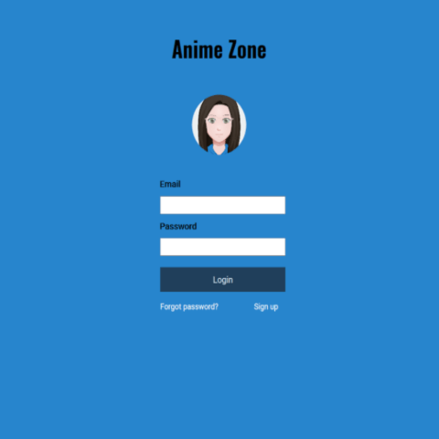

social media app
In fall 2019, I built and designed a progressive web application for my Mobile Web Development class at FHSU. Anime Zone is a social media app designed for adult anime fans. This app provides a user-friendly, chill social platform for anime fans to interact with others, as well as explore, post, and share content. I built this PWA with a combination of HTML5, JavaScript, Lightbox, and PWA methods such as a web manifest and service workers. I designed the site with CSS3, Bootstrap, and Font Awesome Icons. I designed an anime avatar for the site logo to reflect the site's purpose.
For the development phase, I coded a login form, home page, search page, notifications page, user profile page, bookmark page, and settings page. This is the standard set up for social media platforms. I used Font Awesome icons for the social media navigation links and interactive icons below images.
I tested the PWA with Lighthouse, which helped me improve the site's performance, usability, accessibility, and SEO. Additionally, I created a web manifest and service workers. These are key elements of a PWA. Web manifests allow users to download the app on their desktop or mobile devices, while service workers allow users to use the PWA offline.